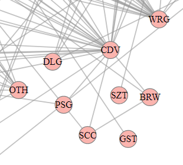
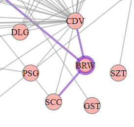
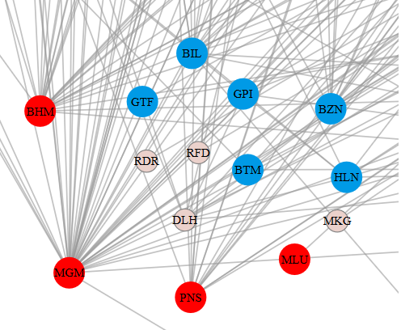
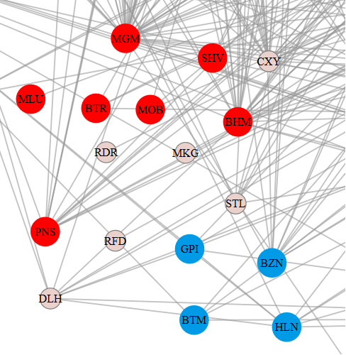
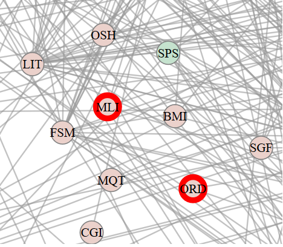
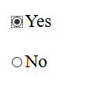
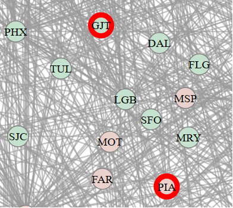
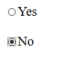

Introduction
This is a research study. We want to understand how to best show network data (items with connections between them).
We will show you a visualization of US airports (ex: MIA, JFK) with links between airports that
often have connecting flights.

You can interact with the visualization as follows:
-
Zoom by using the mouse wheel.
-
Pan by pressing the left mouse button down and
dragging (as in Google maps).
-
Select and deselect airports as answers by double-clicking on them.
-
Select and deselect airports as highlights by clicking on them once.
-
Move airports by
dragging them (sometimes this can be useful to tell where its links go).
-
Mouse-over airports and links to highlight them.
Here is an example of a selected answer, a highlighted node, a hovered node and a hovered edge respectively.




We will ask you a few questions about this data. Please answer the questions as fast and accurate as possible by viewing
and interacting with the visualization. There will be a countdown for each question; once it expires, we will
hide the visualization. We will give you a turk-code to use for payment once you finish the study.
We will pay a $2 bonus to the user with the best overall accuracy/time.
The study includes two questions we consider to be easy enough that everyone can answer correctly. You need to answer both
correctly to receive payment.
Tasks
Task1: "Given the two highlighted groups (red and blue), estimate which group is larger."
HINT: Find the group that has more airports
See a few examples below:
| Questions | Answers |
|  |  |
|  |  |
Task2:
"Does the two highlighted airports belong to the same group?"
HINT: Airports that belong to the same group are filled with similar color.
See a few examples below:
| Questions | Answers |
|  | 
|
|  | 
|
Task3: "How many groups of airports are there in the visualization?"
HINT: Each group of airports have a unique color. So count the number of
uniquely colored groups.
See a few examples below: